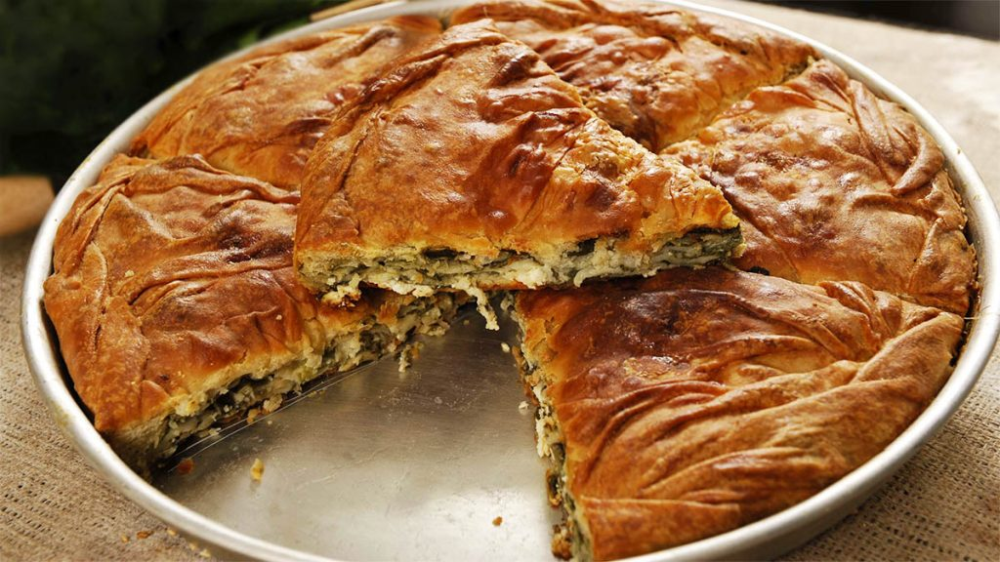

Byrek Recipe
Short Description
This flaky, savory pastry is a traditional Albanian recipe.
Paper-thin layers of a simple dough are filled with a mixture of salty
cheese, milk, and egg.
Ingridients
- dough
- 1/4 cup + 2 tablespoons (85g) water, warm
- 1/8 teaspoon table salt
- 1 1/2 cups (180g)
- 2 tablespoons (25g) extra-virgin olive oil
- Filling
- 1 large egg
- 1 1/2 cups (227g) feta cheese, crumbled
- 1/4 cup (57g) milk, whole preferred
- 2 tablespoons (14g) King Arthur Unbleached All-Purpose Flour
- 1 tablespoon (14g) extra-virgin olive oil
- 3 tablespoons (35g) extra-virgin olive oil,
to brush on dough before filling
- Topping
- 1 large egg, beaten; or 1/4 cup (57g) egg substitute
Steps
To make the dough
- Put the flour, salt, water, and olive oil in a large bowl,
and stir until the dough forms. Transfer to a lightly floured
work surface and knead until the dough is smooth, elastic, soft,
and doesn't stick to your fingers, about 5 minutes. Return the dough
to its bowl, cover, and let it rest for 10 minutes.
To make the filling
- Crack the egg into a medium bowl and whisk lightly.
Whisk in the feta, milk, flour, and 1 tablespoon olive oil.
- Preheat the oven to 375°F. Line a baking sheet with parchment paper.
- Turn the dough out onto a lightly floured work surface.
Divide the dough in thirds. Working with one piece at a time
(keep the rest covered), use a floured pin to roll the dough
into a very thin 12" square. If the dough resists as you're rolling it,
let it rest a few minutes before proceeding.